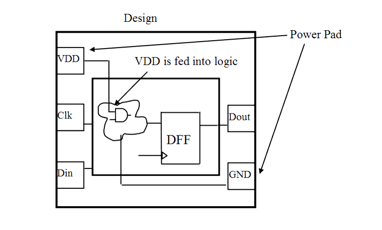

| Description | This rule fires when Leda detects VDD or GND directly connected to logic gates. It is usually forbidden to connect VDD or GND directly to logic gates, except for those derived from tie-off cells. This rule ignores tie-off cells specified with the TIE_OFF_CELLS parameter for rule NTL_CON17. The rule does not fire on logic gates which have TIE_OFF_CELLS for their VDD or GND drivers. |
| Policy | DESIGN |
| Ruleset | STRUCTURE |
| Language | VHDL/Verilog |
| Type | Hardware |
| Severity | Error |
This is an example of invalid Verilog code, followed by a circuit diagram that illustrates the problem:
module ntl_str11_top; ... supply1 VDD; supply0 GND; GTECH_AND2 I0(.A(Reset), .B(VDD), .Z(Reset_2)); // NTL_STR11 fires -- VDD is connected to logic GTECH_OR2 I1(.A(Din), .B(GND), .Z(net02)); // NTL_STR11 fires -- GND is connected to logic GTECH_XOR2 I2(.A(net_01), .B(net_02), .Z(Dout)); ... endmodule